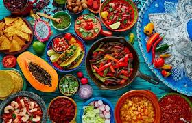
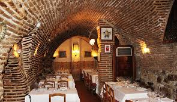

Historia de la Cocina
 Nuestros antepasados en la era del hombre primitivo basaban su supervivencia ingiriendo lo que la tierra les daba. Desde plantas, frutos y semillas eran parte de su diaria dieta, realizaban esto ya que imitaban las costumbres de otros animal es quienes con su hocico escarbaban el suelo en busca alimento. Si hablamos de proteínas, la obtenían de huevos de pájaro y pequeños e indefensos animales fáciles de capturar, además de que no dudaban de ingerir a cuanto insecto se les cruzara. Todo lo anterior era consumido al natural, sin aditamentos, directo a la boca
Los alimentos gourmet son aquellas preparaciones que han sido elaborados con ingredientes exquisitamente seleccionados, con exhaustivos cuidados de higiene
Nuestros antepasados en la era del hombre primitivo basaban su supervivencia ingiriendo lo que la tierra les daba. Desde plantas, frutos y semillas eran parte de su diaria dieta, realizaban esto ya que imitaban las costumbres de otros animal es quienes con su hocico escarbaban el suelo en busca alimento. Si hablamos de proteínas, la obtenían de huevos de pájaro y pequeños e indefensos animales fáciles de capturar, además de que no dudaban de ingerir a cuanto insecto se les cruzara. Todo lo anterior era consumido al natural, sin aditamentos, directo a la boca
Los alimentos gourmet son aquellas preparaciones que han sido elaborados con ingredientes exquisitamente seleccionados, con exhaustivos cuidados de higiene
Productos Gourmet
 son necesariamente los más caros y exclusivos, sino aquellos que provienen de una respetable recolección o elaboración, independientemente de su precio. Pueden pertenecer a esta clasificación tanto una manzana del mercado como un plato del restaurante más caro de París.
también pertenecen a esta clasificación, ya que han sido elaborados cuidadosamente por personas que aman su trabajo y desean ofrecer un producto de calidad; aún aquéllos que poseen aditivos para conservacion(siempre y cuando éstos no influyan en la calidad organoléptica) pueden ser productos gourmet.
El gourmet también está vinculado al hedonismo, que es la doctrina filosófica que sostiene al placer como principal objetivo de la vida. Seleccionar los ingredientes adecuados y dedicar el tiempo necesario a cada preparación forma parte de la filosofía gourmet, que pretende que la comida sea un momento de disfrute.
Esta ciencia tiene su semejanza con la filosofia en tanto y en cuanto intenta definir la importancia de comer de forma saludable y ética. Según Chevalier de Lelly existían tres tipos de comensales: los Gourmand (apasionados por la comida), los Gourmet (gustan de platos elaborados y refinados) y los Gastrósofos (eligen siempre aquellos alimentos saludables y más “morales”).
El primer Restaurant
 La historia del primer lugar en servir comida a clientes data del siglo XVI, en cuya época abundaban las hosterías de alojamiento pero sin servicios alimenticios, fue cuando la demanda los ingenió a dar comidas sencillas como sopas y guisos en sus hostales logrando una muy buena aceptación y al nacimiento de un negocio. Recibió el nombre de restaurant derivado del francés “restaurer” o sea restaurar en modo de descanso y alimento.
Pero los restaurants no serian lo que son hoy gracias a la revolución francesa del siglo XVIII, ya que el pueblo luchaba en contra del abuso social por parte de reyes, ya que les quitaban sus alimentos y cosechas para quedarse con los restos, y ellos querían comer lo que ellos comían. Después de años de batallas los cocineros reales abandonaron los palacios y llegaron a los restaurants para comenzar con sus doctrinas de platillos.